拯救靈魂的教會영혼을 구원하는 교회
每天都有傳福音特攻隊出去，把福音帶到街上。매일 전도 특공대가 거리로 나가 복음을 전합니다.
像家一樣的教會 — 每個人被培育，也去培育別人집 같은 교회 — 모두가 양육받고, 모두가 양육합니다
拯救靈魂的教會 · 彼此相愛的教會 · 成為門徒並使人作門徒的教會。歡迎你來，成為我們家的一份子。영혼을 구원하는 교회 · 서로 사랑하는 교회 · 제자가 되고 제자를 삼는 교회. 어서 오세요, 우리 집의 한 식구가 되어 주세요.
每天都有傳福音特攻隊出去，把福音帶到街上。매일 전도 특공대가 거리로 나가 복음을 전합니다.
主日一起用餐、一起活動，把陌生人變成家人。주일에 함께 식사하고 함께 활동하며, 낯선 사람을 가족으로 맞습니다.
固定出席的人都接受培育，同時也去培育別人。정기적으로 출석하는 모든 사람이 양육을 받고, 동시에 다른 사람을 양육합니다.
主日從早上的敬拜團練習開始，崇拜、用餐、下午活動，到傍晚一起出去傳福音。第一次來的朋友，歡迎主日 10:30 到「好消息廣場」（西屯區工業區十六路3之21號 2樓之2）參加主日崇拜。주일은 아침 찬양팀 연습으로 시작해 예배·식사·오후 활동을 거쳐, 저녁에 함께 전도하러 나가는 것으로 마칩니다. 처음 오시는 분은 주일 10:30에 「好消息廣場」(시툰구 工業區十六路3之21號 2층)으로 오시면 됩니다.
色塊長度依實際時間比例繪製。색 막대의 길이는 실제 시간 비율대로 그렸습니다.
晨禱 06:15–08:45（其中 07:20–07:35 同心合意禱告）。另有每日 333 小組電話禱告（彼此代禱約 5 分鐘）與每週一次的門徒訓練。幸福小組在 台中市龍井區遠東街179巷16號 聚會。詢問：새벽 기도 06:15–08:45 (그중 07:20–07:35 합심 기도). 이 밖에 매일 333 소그룹 전화 기도(서로 약 5분씩 중보)와 매주 한 번의 제자훈련이 있습니다. 행복소그룹은 타이중시 룽징구 遠東街179巷16號에서 모입니다. 문의: 0988-470-421
每主日 10:30–12:30，敬拜團帶領詩歌，牧師宣講神的話語。崇拜前 10:00 有預備禱告會。매 주일 10:30–12:30, 찬양팀이 찬양을 인도하고 목사님이 말씀을 전합니다. 예배 전 10:00에는 준비 기도회가 있습니다.
享受美食、認識朋友、玩玩遊戲、詩歌讚美、生命見證、為你禱告 — 邀請朋友一起度過美好的夜晚。맛있는 음식, 새 친구, 게임, 찬양, 간증, 그리고 당신을 위한 기도 — 친구를 초대해 즐거운 저녁을 함께 보냅니다.
我們在基督裡已經是一家人，並且努力建立更親密的家。敞開心門，分享異象、感恩與生活，也用心傾聽其他肢體心裡的聲音。우리는 그리스도 안에서 이미 가족이고, 더 친밀한 가정을 만들기 위해 노력하고 있어요. 마음의 문을 열고 비전과 감사, 그리고 삶을 나누며 다른 지체의 마음의 소리를 귀담아들어요.
（每主日下午聚會 · QT分享／生活分享）(매주 주일 오후 모임 · QT 나눔/삶 나눔)
每天晚上都有特攻隊在隊長帶領下外出傳福音，結束後一起報告。매일 저녁 특공대가 대장의 인도로 전도하러 나가고, 마친 뒤 함께 보고합니다.
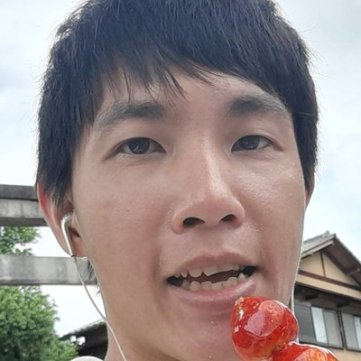
週一월天王 隊長대장「務要傳道，無論得時不得時，總要專心。」提摩太後書 4:2"너는 말씀을 전파하라 때를 얻든지 못 얻든지 항상 힘쓰라"디모데후서 4:2
凡固定出席的人都要接受培育，同時也去培育別人。現在每週接受培育的人數比主日出席的人數還多。정기적으로 출석하는 모든 사람은 양육을 받고, 동시에 다른 사람을 양육합니다. 지금은 매주 양육받는 사람이 주일 출석 인원보다 많습니다.
每一階段都有「教材」與「必讀書」。下載完整的教材與必讀書目錄：단계마다 '교재'와 '필독서'가 있습니다. 전체 교재·필독서 목록을 받아 보세요:
養育系統 教材與必讀書（PDF）양육 시스템 교재와 필독서 (PDF)清晨一起晨禱，週五晚上一起禱告；平日則以 333 小組用電話彼此代禱。새벽에 함께 새벽 기도를 드리고, 금요일 저녁에 함께 기도합니다. 평일에는 333 소그룹이 전화로 서로 중보합니다.
每天都有「傳福音特攻隊」在隊長帶領下外出傳福音，結束後一起報告。2023 年 1 月開始記錄，到 2026 年 9 月為止的累計：매일 '전도 특공대'가 대장의 인도로 전도하러 나가고, 마친 뒤 함께 보고합니다. 2023년 1월 기록을 시작한 뒤 2026년 9월까지의 누적입니다.
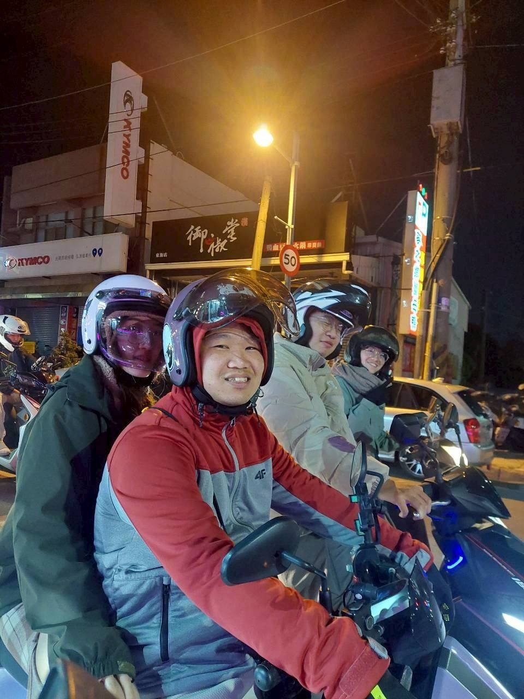
橫條使用對數尺度，讓 637 人與 264,319 人能在同一張圖上看見。막대는 로그 눈금입니다(637명과 264,319명이 한 그림에 함께 보이도록).
2023 年 1–9 月只有合計（22,460 次），以斜線柱顯示每季平均。2026 年 1–3 月尚無資料。2023년 1~9월은 합계(22,460회)만 있어 빗금 막대로 분기 평균을 표시했습니다. 2026년 1~3월은 자료가 아직 없습니다.
年底把每週目標從 700 次提高到 1,400 次，週五也有了特攻隊。연말에 주간 전도 목표를 700회에서 1,400회로 올리고, 금요일에도 특공대가 생겼습니다.
教會附近約 5 萬居民，幾乎每個人都聽過福音。聖誕節來了 29 位新朋友。교회 주변 주민 약 5만 명, 거의 모두가 전도를 받아 보았습니다. 성탄절에 새 친구 29명이 왔습니다.
約 20 位弟兄姊妹一年傳了 7 萬多次。開始每月一次的街頭敬拜（Busking）傳福音。교회 20여 명이 한 해 7만 번 넘게 전도했습니다. 한 달에 한 번 거리 찬양(버스킹) 전도를 시작했습니다.
改以「對話次數」為目標後，對話人數從 7 月的 101 人增加到 9 月的 300 人。'대화 횟수'를 목표로 바꾼 뒤, 대화한 사람이 7월 101명에서 9월 300명으로 늘었습니다.
多年來以「遇見次數」為目標，但許多人只急著達標。在門徒訓練班的討論中，一位弟兄提議改以「對話次數」為目標：主日一組兩人完成五次對話即算完成，但一定滿一小時才結束 — 繼續傳，或在便利商店喝茶交通。效果立刻出現。여러 해 '만남 횟수'를 목표로 했지만 많은 사람이 목표 달성에만 급급해졌습니다. 양육반 토론에서 한 형제가 '대화 횟수'를 목표로 하자고 제안했습니다. 주일에 한 조 두 사람이 다섯 번 대화하면 완료하되, 반드시 한 시간을 채웁니다 — 계속 전도하거나 편의점에서 차를 마시며 교제합니다. 효과는 바로 나타났습니다.
資料：宣教消息（2023 冬、2024 冬、2025 冬、2026 夏、2026 秋）與 2025 年每月統計表。2024 年傳福音次數以四季合計（70,688）表示，宣教消息上印的是 71,888。자료: 선교 소식(2023 겨울, 2024 겨울, 2025 겨울, 2026 여름, 2026 가을)과 2025년 월별 통계표. 2024년 전도 횟수는 네 분기 합계(70,688)로 적었습니다(선교 소식에는 71,888로 인쇄됨).
退修會、郊遊、一日旅遊、體育、受洗、與韓國短宣隊的聯合聚會，還有聖誕、感恩、復活節與音樂會。수련회, 소풍, 하루 여행, 체육, 세례, 한국 단기선교팀과의 연합 집회, 그리고 성탄·추수감사·부활절과 음악회가 있습니다.
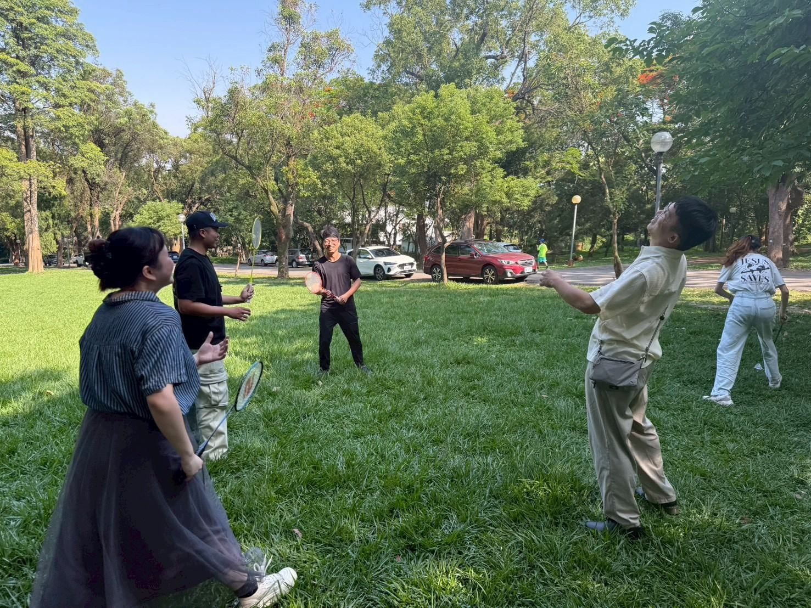
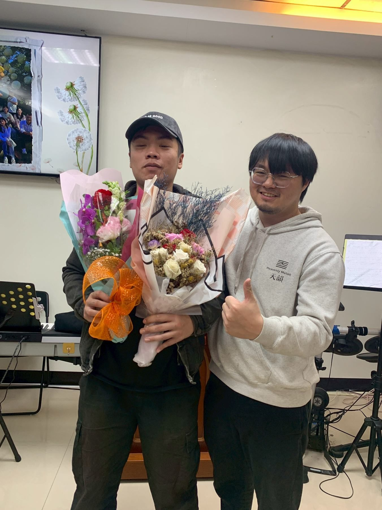
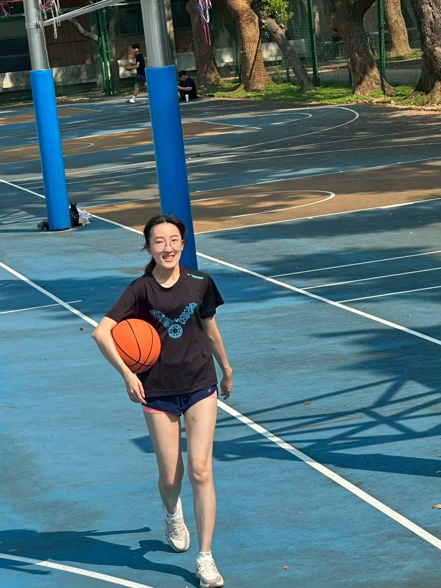
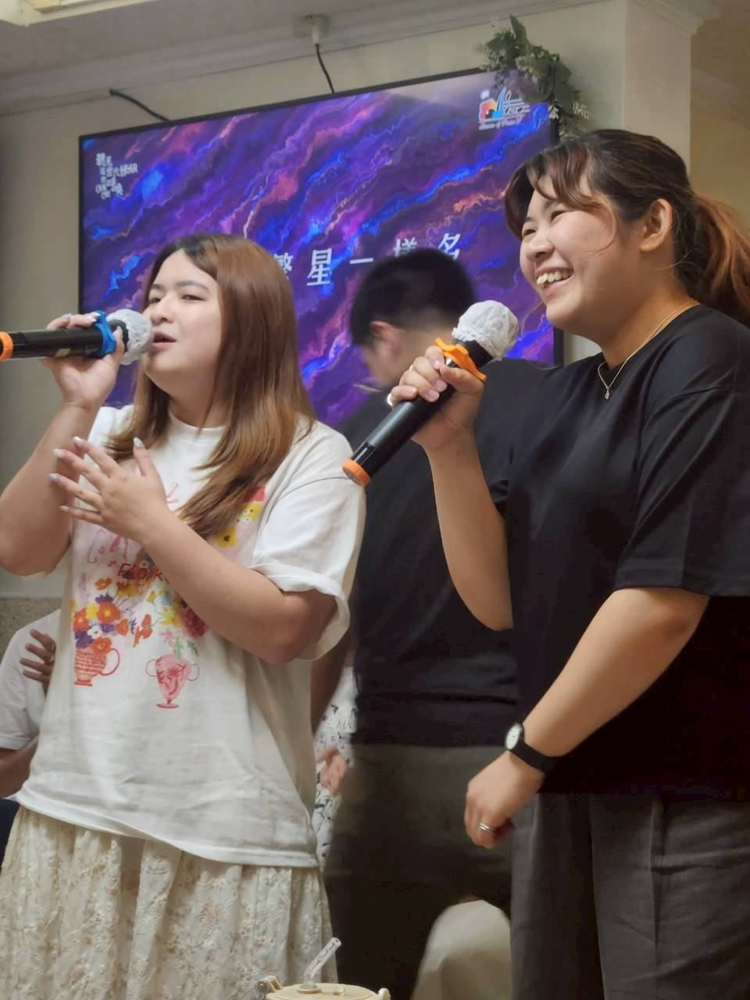
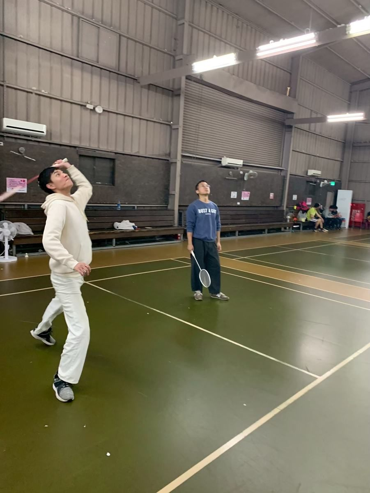
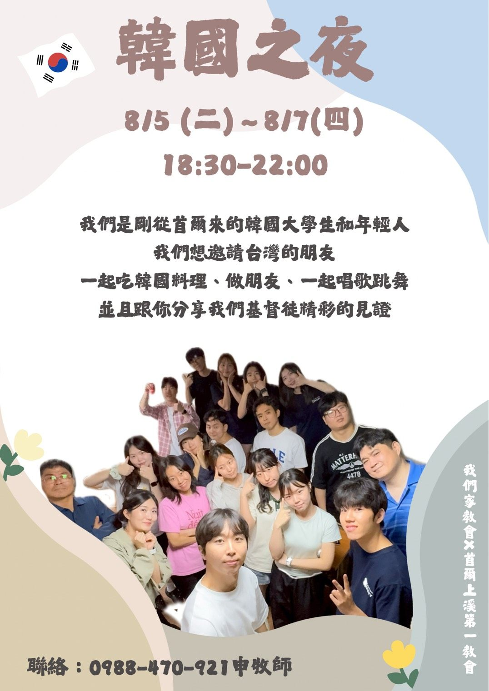
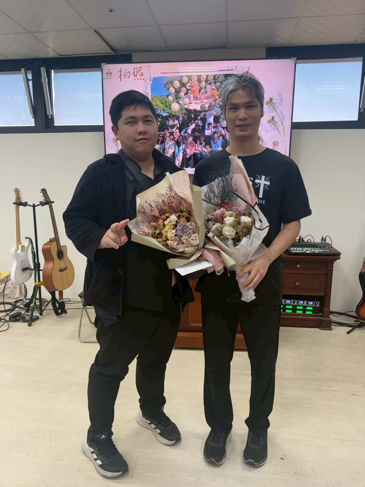
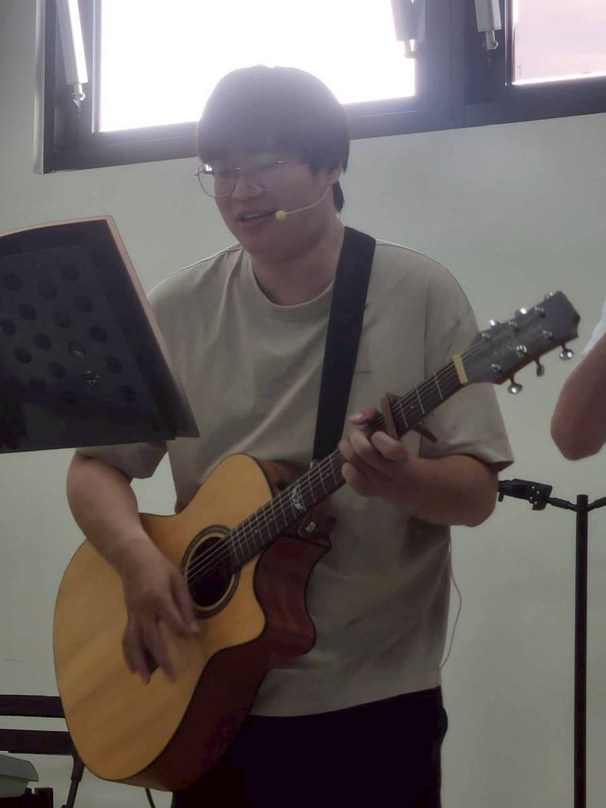
每半年一次（兩天一夜），已持續十年。2026 年 4 月與 10 月（南投）舉行。반년에 한 번(1박 2일), 10년째 이어 오고 있습니다. 2026년에는 4월과 10월(난터우)에 열렸습니다.
各每半年一次，常常邀請福音對象一起參加。각각 반년에 한 번씩, 전도 대상자를 함께 초대할 때가 많습니다.
與來自韓國的短宣隊聯合傳福音、舉辦特別聚會（如 2025 年首爾上溪第一教會青年部、2026 年새서울교회）。한국에서 온 단기선교팀과 연합 전도·특별 집회를 엽니다(예: 2025년 상계제일교회 청년부, 2026년 새서울교회).
每半年一次（兩天一夜），已持續十年。一起敬拜、禱告、聽信息、玩遊戲，在大自然裡更親近神。반년에 한 번(1박 2일), 10년째 이어 오고 있습니다. 함께 찬양하고 기도하고 말씀을 듣고 게임을 하며 자연 속에서 하나님께 더 가까이 갑니다.
每半年一次，常常邀請新朋友一起參加（苗栗、清境農場、新竹等）。반년에 한 번씩, 새 친구를 함께 초대할 때가 많습니다(먀오리, 칭징 농장, 신주 등).
從 2014 年起，許多韓國教會與宣教團體來到我們家一起傳福音：青年使命團（YWAM）、首爾上溪第一教會、新首爾教會、大邱 CCC 等。韓國之夜、韓服體驗、街頭傳福音與特別聚會。2014년부터 많은 한국 교회와 선교 단체가 우리 교회에 와서 함께 전도했습니다: 예수전도단(YWAM), 상계제일교회, 새서울교회, 대구 CCC 등. 한국의 밤, 한복 체험, 거리 전도와 특별 집회를 엽니다.
按下播放鍵才會載入影片。更多影片請到我們的 YouTube 頻道。재생 버튼을 누르면 영상이 열립니다. 더 많은 영상은 교회 YouTube 채널에 있습니다.
LINE 群組「我們家教會2026」：想加入的朋友，請先聯絡申牧師（0988-470-421）。LINE 그룹 「我們家教會2026」: 가입을 원하시면 신영희 목사님(0988-470-421)께 먼저 연락해 주세요.
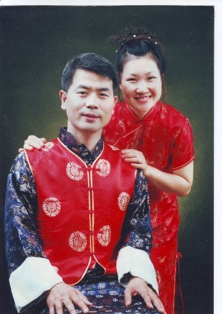
韓國長老教會總會宣教部（GMS）差派 · 韓國釜山 在松第一教會 差派대한예수교장로회 총회세계선교회(GMS) 파송 · 부산 재송제일교회 파송
牧師與師母每天一起實踐個人傳福音的目標，晚上再與傳福音特攻隊一起出去。牧師說：「如果沒有特別的事，我每天都堅持三個小時的禱告。」목사님과 사모님은 매일 함께 개인 전도를 하고, 저녁에는 전도 특공대와 다시 나갑니다. 목사님은 "특별한 일이 없으면 매일 세 시간 기도 생활을 지킨다"고 말합니다.
我們家教會的同工與領袖我們家教會의 동역자와 리더들
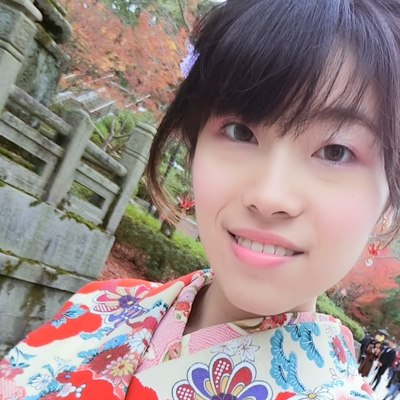
芷瑩2026 年秋季宣教消息中的代禱事項。2026년 가을 선교 소식의 기도 제목입니다.
好消息廣場 · 臺中市西屯區工業區十六路3之21號 2樓之22F-2, No. 3-21, Gongyequ 16th Rd., Xitun Dist., Taichung City
每週日 早上 10:30매주일 오전 10:30
臺中市龍井區遠東街179巷16號No. 16, Ln. 179, Yuandong St., Longjing Dist., Taichung City 434018
聯絡：申牧師 0988-470-421연락: 신영희 목사 0988-470-421
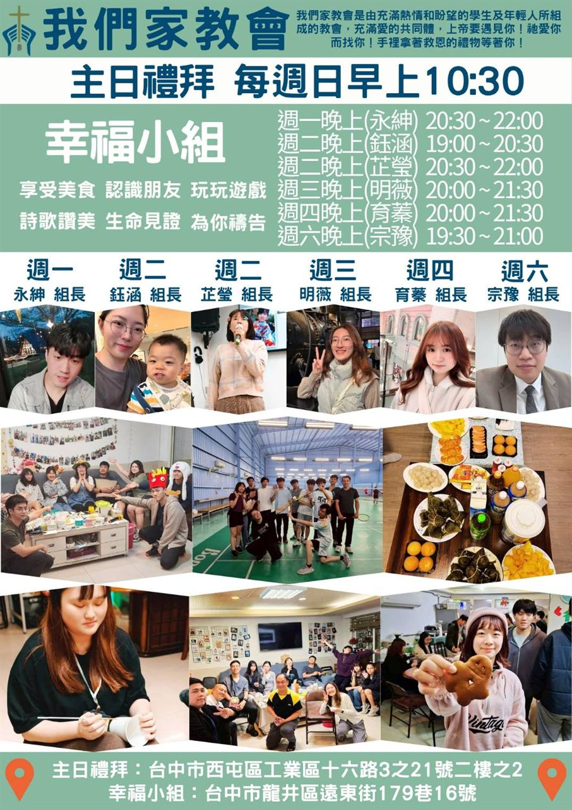
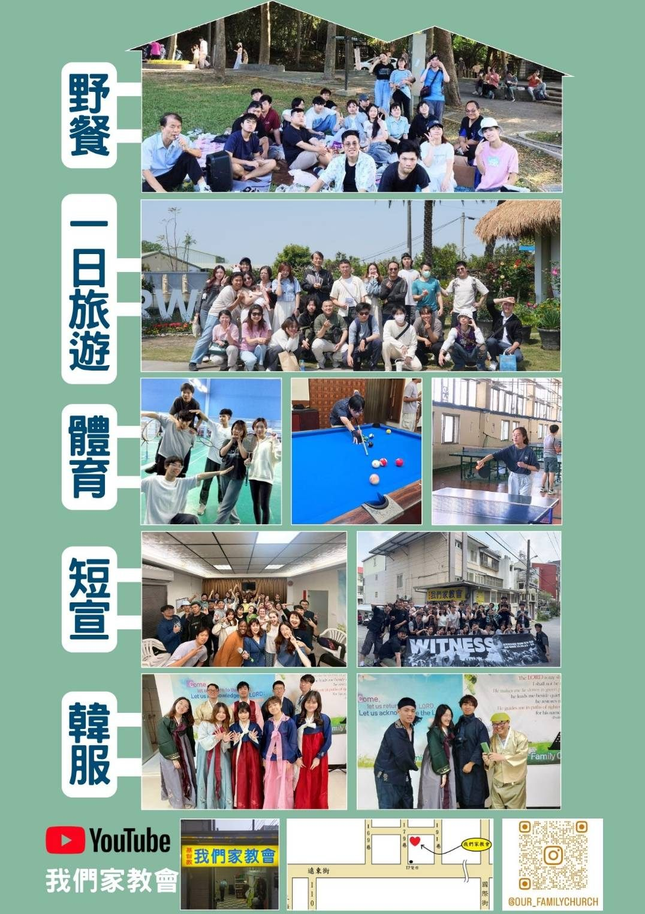
主日禮拜與幸福小組時間，以及野餐、一日旅遊、體育、短宣、韓服體驗 — 歡迎下載傳單，分享給朋友。주일 예배와 행복소그룹 시간, 그리고 소풍·하루 여행·체육·단기선교·한복 체험 — 전도지를 내려받아 친구에게 나눠 주세요.
「凡勞苦擔重擔的人可以到我這裡來，馬太福音 11:28마태복음 11:28
我就使你們得安息。」"수고하고 무거운 짐 진 자들아 다 내게로 오라
내가 너희를 쉬게 하리라"
從2014年至今，每一個主日的腳蹤，都記錄著神的恩典與同在。2014년부터 지금까지, 주일마다 걸어온 걸음 속에 하나님의 은혜와 함께하심이 새겨져 있습니다.